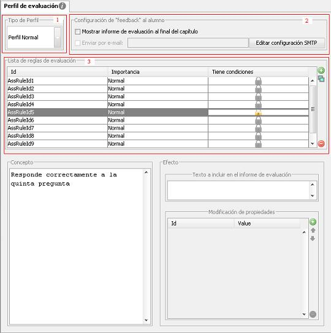

En los juegos <e-adventure> se brinda la posibilidad de realizar una evaluación automática de la actuación del alumno en el juego. Los perfiles de evaluación específican como serán los informes de evaluación.
El perfil posee una serie de reglas que evalúan determinados estados de juego (valores de flags y variables) y realizan las acciones que se determinen para esos estados. Solamente se puede asignar un perfil por capítulo, pero podemos mantener varios perfiles para tener distintas posibilidades de evaluación, eligiendo en cada caso cuál utilizar. De esta manera los juegos son reutilizables en distintos contextos y para distintos públicos.
Cada perfil de evaluación presenta las siguientes opciones:
